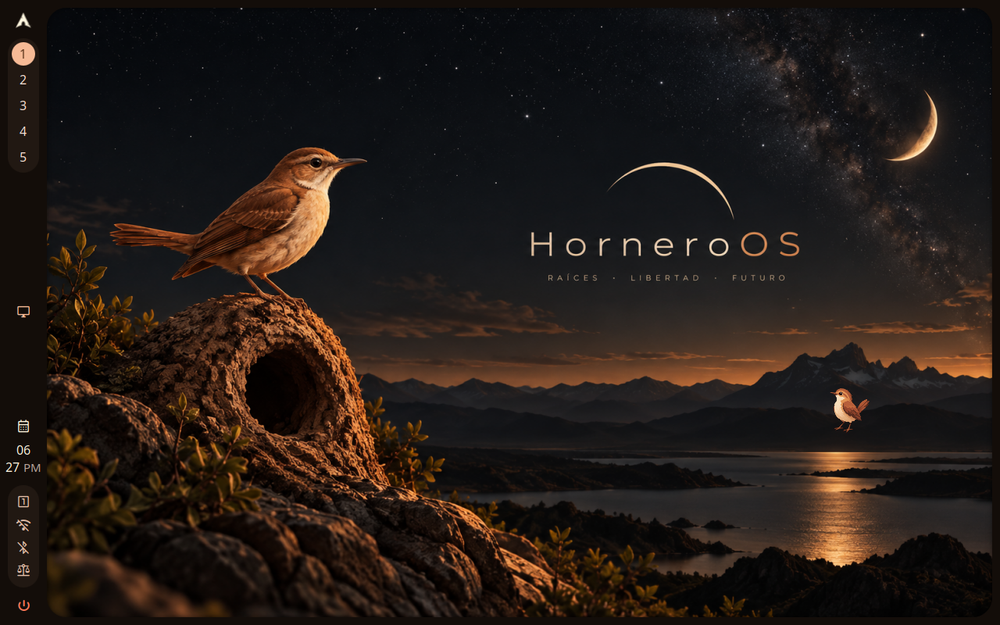

smoke/desktop-ready PASS
20261024T182612Z-smoke-desktop-ready-1 · attempt 1 · 52.77 s · class -
Reason: all proof checks passed
Instruction
Boot the machine and wait until the Hornero desktop is ready to use.
Proof
| where | kind | note | detail | |
|---|---|---|---|---|
| ✅ | proof 0 | probe | ok | |
| ✅ | proof 1 | probe | ok | |
| ✅ | proof 2 | probe | ok | |
| ✅ | proof 3 | probe | ok | |
| ✅ | proof 4 | screenshot | ["001-desktop.png"] |
Product and environment
| shell_sha | 248f0c9dd020f5b83bad71503ecc488a6d0d6857 |
|---|---|
| config_sha | 64557c05ecf368fb3d5ed6ced69bc5e05901edbe |
| horneroctl | horneroctl horneroctl-v0.2.0-preview30-4-g78ff5f4 (78ff5f4) |
| horneroctl_sha256 | 269687cbf66666c7a33ebdaa82bafdf4b912e666405c44b7a9e42173af85f877 |
| engine | native |
| compositor | hyprland |
| hornero_qa | 0.1.0 |
| host_kernel | 7.2.9-arch1-1 |
| qemu | QEMU emulator version 11.1.2 |
| image | preview20-core78ff-shell248f0c9.qcow2 |
| outputs | 1 |
| resolution | 1280x800 |
Screenshots



Actions
{"t": 28.384, "kind": "ready", "serial": []}
Logs: logs/ · machine-readable: run.json, result.json, assertions.json, actions.jsonl